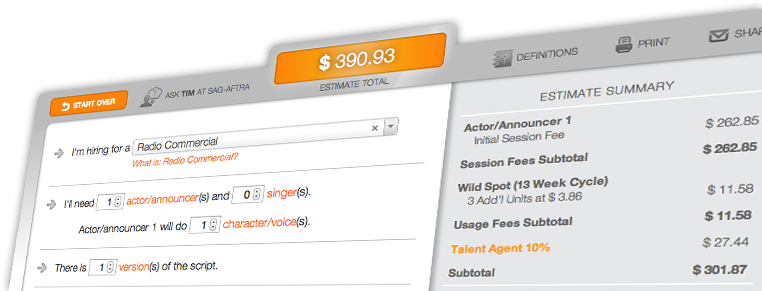

Start
Estimate Total
| Estimate Summary | |
|---|---|
| $ 0.00 | |
| Talent Agent 10% | $ 0.00 |
| Subtotal | $ 0.00 |
| Pension & Health | $ 0.00 |
| Payroll Taxes | $ 0.00 |
| Estimate Total | $ 0.00 |
Congratulations! You can afford Union talent!
Contact SAG-AFTRA Twin Cities now to ask how we can help you take the next step!

Definitions
×Advisory
These definitions of terms from the SAG-AFTRA Commercials and Corporate/Educational and Non-Broadcast contracts are intended to be helpful descriptions, not exact contract language or comprehensive interpretations of contract.
-
- Actor/Announcer
- An on-camera or voiceover (off-camera) performer.
-
- Ad Lib/Creative Session
- Any request of a Performer to devise dialogue, or any request to devise action not provided by the script, storyboard or by specific direction. Any request for translation of a script into another language is also considered improvisational performance. Premium pay applies. For further details Call Tim @ SAG-AFTRA
-
- Agent’s 10%
- The percentage performers pay to their talent agent as commission for services rendered. The commission collected by union regulated talent agencies may not exceed 10%.
-
- Audio Only - Principal Actor
- A voiceover performer hired on a hourly basis under the Audio-Only section of the Co/Ed contract. Other performer categories under this Audio Only contract include 3-Minute Principal, Non-Principal and Singer.
-
- Cable Commercial
- Commercial made for cable use (local, regional or national cable networks or systems) or moved over to cable use. Payment for cable use is based on 13-week cycles and weighted units for each network/system where the spot will run.
-
- Category I
- These programs under the Co-Ed contract serve to train, inform, promote a product or service, or to perform a public relations function. Category I programs are not intended for exhibition to the general public but to be used or shown on a restricted basis.
-
- Category II
- These programs under the Co-Ed contract are designed primarily to sell specific products or services to the consuming public at stores, shopping centers, or other such public spaces. These programs can also be supplied free of charge to customers as a premium for consumers of the product. Category II programs are intended for unrestricted exhibition to the general public.
-
- Character/Voice
- A role (or roles) in a script portrayed by an actor/announcer. Each separate role requires an additional session fee.
-
- Co-Ed Contract
- Refers to the Corporate/Educational and Non-Broadcast code, which covers educational and training programs, public relations and promotional programs. Programs generally fall into one of two categories, Category I or Category II, depending on the intended exhibition and purpose of the program. The Co/Ed Contract also covers certain audio-only programming, including Category I and Category II audio programs, Interactive Voice Recording (IVR) Phone Prompt Systems, phonecasting and storecasting.
-
- Cycle
- Consecutive weekly use periods of a commercial; a 13-week use cycle is often standard. (Also referred to as "fixed cycle.") 8-week use cycles are also common.
-
- Day Performer
- A principal performer category under the Co-Ed contract, which can be either on-camera or voiceover. An on-camera day performer is hired on a daily basis. A voiceover day performer is hired on an hourly basis. Other on-camera day performers under the Co-Ed contract include Half-Day Performers (no more then 4 hours), 3-Day Performers (3 consecutive days of work) and Weekly Performers (5 consecutive days of work).
-
- Dealer Commercial
- A commercial made and paid for by a manufacturer or distributor of a product or service which the commercial advertises. It usually includes a local "tag" added by local stores/outlets when the commercial airs in each location.
-
- Estimate Total
- The SAG-AFTRAnumbers.com "Estimate Total" for each job scenario is intended to be a helpful budget tool, not an exact job quote.
-
- Exclusivity
- This applies to principle performers in commercials. The advertiser has paid (through holding fees and current use cycles) for exclusive rights to the performer’s work, likeness and image with regard to directly competitive products.
-
- Extra/Background Actor
- A general extra or background actor is an on-camera performer who does not speak any lines, but who may be heard, singly or in concert as part of a group or crowd. An Extra/Background Actor may also perform ordinary business including normal action, gestures and facial expressions. The Co-Ed contract includes Special Ability extras (exp. riding horses, playing sports, riding motorcycles, dealing cards, etc.) and Silent Bit extras (rehearsed or performed pantomime essential to the staging of the scene).
-
- General Extra
- A background performer who doesn't speak on camera as an individual, but may be seen and heard as part of a group or crowd. A General Extra cannot be featured as a Hand Model or required to do any "special business."
-
- H&R/P&H
- AFTRA Health & Retirement Funds or SAG Pension & Health Funds. Signatory employers make contributions into the AFTRA H&R Funds or SAG P&H Funds on behalf of performers employed under union contracts. Performers qualify for health coverage and retirement benefits based on their union-covered employment.
-
- Hazardous Work
- Any work in unusual or potentially dangerous conditions. This includes work in smoke, stunts, work with animals, strenuous or repetitive physical activity. Specific protections apply for stunt driving, dancers, etc. Hazardous work requires prior notification to and consent from the performer. Additional compensation applies.
-
- Holding Fee
- Set payment by an advertiser to retain the right to use a performer's services, image or likeness on an exclusive basis. This is not the same as payment for use cycles.
-
- Holiday Pay
- Premium pay due for work on specific holidays as designated in the collective bargaining agreement (e.g. Thanksgiving, Easter, etc.) Double pay applies.
-
- Interactive Voice Recording (IVR) Phone Prompt Systems
- Audio-only work that falls under the Co-Ed contract. IVR recording systems are designed primarily to identify companies, refer callers to correct departments and for voice mail messages. IVR systems may include incidental promotional messages heard while the caller is on hold.
-
- Internet
- Commercial made for internet use, or moved over to internet use. Payment can be based on 8-week or one-year cycles of use.
-
- Lifts
- Mechanical editing or alteration of on-camera material of a commercial. For example, a lift can involve taking a sequence from one commercial to create all or part of another commercial.
-
- Markets
- TV and radio geographic broadcast areas. Each market is assigned a "unit weight."
-
- Narrator/Spokesperson
- A principal performer category under the Corporate/Educational Non- Broadcast contract (Co-Ed contract), a Narrator/Spokesperson's primary function is to explain, demonstrate, or promote substantially on camera in monologue.
-
- New Media
- New media includes digital, electronic or any other type of delivery platform, whether now known or unknown, such as commercials delivered to mobile phones or other digital/electronic devices. New Media does not apply to commercials on television or the internet. Use cycles can be 8-weeks or one-year.
-
- Night Shoot
- Work between 8 PM and 6 AM (except if first call for the day is at 5 AM). Premium pay usually applies.
-
- Non-Broadcast Use
- Theatrical or Industrial non-air use of a commercial. For non-broadcast program material, see definition for Corporate/Educational and Non-Broadcast Contract (Co-Ed Contract).
-
- Overtime
- Any work performed beyond the applicable contracted session time.
-
- Paymaster
- An independent talent payment service acting as the "Employer of Record" for a producer. This paymaster makes sure proper withholdings are made and taxes are paid.
-
- Payroll Taxes
- Tax withholdings and payments required by law, whether state or federal (i.e. federal and state income taxes, social security, unemployment insurance taxes and disability insurance taxes, etc.). Performers are employees, not independent contractors, under SAG-AFTRA contracts and their compensation is subject to taxes and withholding.
-
- Phonecasting
- Audio-only work that falls under the Co-Ed contract. Phonecasting recordings are designed to be delivered via the telephone and made accessible to the general public. Examples include information to consumers, promotion of products and services and entertainment services.
-
- Principal Actor
- A performer who is featured prominently on camera whether or not speaking lines; or for a voiceover performer, (off camera) who is not part of a group.
-
- Program Commercial
- A TV commercial in which usage payment is due each time the spot airs within a program, with payment amounts depending on the number of cities where it airs.
-
- PSA
- Public Service Announcement/Government Agency Message. Not a commercial, PSAs are television or radio messages on behalf of various governmental agencies, nonprofit public service organizations, charities and museums. Advance consent of the Union and the Principal Performer(s) is required, and when granted, the union allows one year’s unlimited use and waives additional compensation beyond required minimums.
-
- Radio Commercial
- Commercial made to air on radio. For wild spot radio commercials, it must not exceed one minute (60 seconds) in length or additional payment applies.
-
- Radio Commercial Demo
- A non-air demo used for copy tests that is not intended for broadcast use.
-
- Retakes
- A callback session to re-record a script, or to make reasonable changes and corrections to the sound track or in photography. Compensation for retake sessions varies. For further details, Call Tim @ SAG-AFTRA
-
- Session Fee
- Wages paid the performer for time spent in a recording session. Overtime or additional payment is due if the session exceeds the limits allowed under the applicable contract.
-
- Signatory
- An employer who has agreed to produce under the terms of a union contract. The signatory employer is often referred to as the "Producer" in union contracts.
-
- Singer
- In commercials, a jingle recording artist (solo, duo or group).
-
- Storecasting
- Audio-only work that falls under the Co-Ed contract. Storecasting is recorded announcements similar to commercial messages on TV and radio, which are amplified and made accessible to the general public at places of business. Such announcements are not for use as radio commercials.
-
- Supplemental Use
- Under the Co-Ed contract, a Producer can acquire additional exhibition rights to use a program upon payment of specific supplemental fees. Examples of a supplemental use may include: basic and pay cable television, network and non-network television, theatrical exhibition, foreign television, internet use, integration or customization of material to create additional programs, sale or rental to the industry or to the general public.
-
- Tag
- Short supplement to the body of a commercial. A tag can be an introduction or ending to a commercial, providing factual information only, such as identifying a dealer or location, phone number, sale date, product availability, etc.
-
- 3-Minute Principal Performer
- A category/rate specific to audio-only programs under the Co-Ed contract. The rate applies only to audio programs of three minutes or less and must be recorded in one session not longer than one-half hour.
-
- Travel Time
- Work time spent traveling to an out of town location.
-
- TV Commercial
- Commercial made to air on television. It can feature both on-camera and/or voiceover (off-camera) actors, announcers and singers.
-
- TV Commercial Demo
- A non-air TV commercial not intended for broadcast that is used for audience testing, client demos and/or copy testing. It can feature both on- camera talent and/or voiceover (off-camera) talent.
-
- Unit
- Used to calculate broadcast commercial usage payment rates based on where the spot airs. Each television or radio market area (city) has a calculated "unit weight."
-
- Version
- Length of recorded spot, e.g. 15, 30 or 60 second version.
-
- Wardrobe Fee
- A maintenance fee paid to on-camera performers who are required by the Producer to supply specified personal wardrobe during rehearsal and/or performance. The fee is paid per outfit/costume change. There are two different rates, one for evening wear and one for non-evening wear.
-
- Wardrobe Fitting
- Required call of performer for make-up, hair and wardrobe/costume fitting. All time spent is work time.
-
- Wild Spot
- A specific type of usage of commercials. A commercial qualifies as a wild spot if it is broadcast on non-network stations and is used independently of any TV or radio program or on local participating programs.